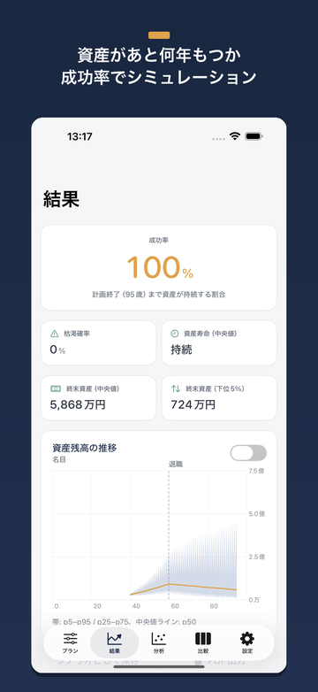
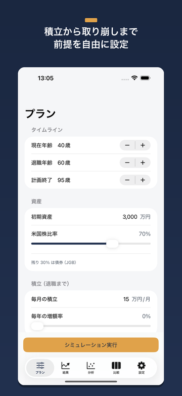
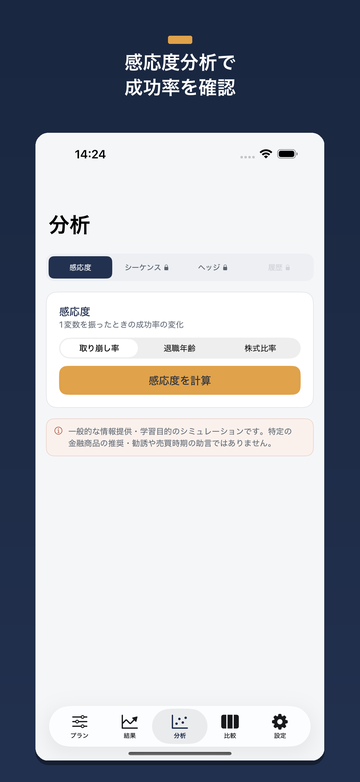
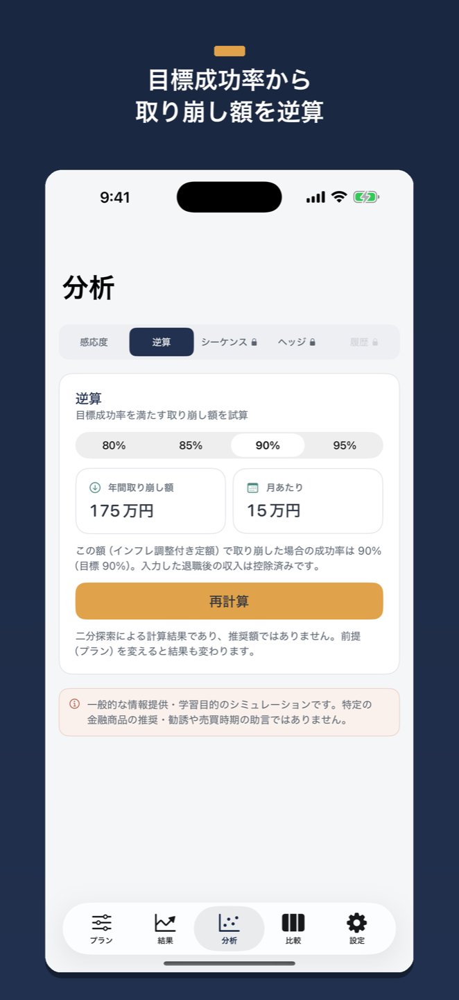
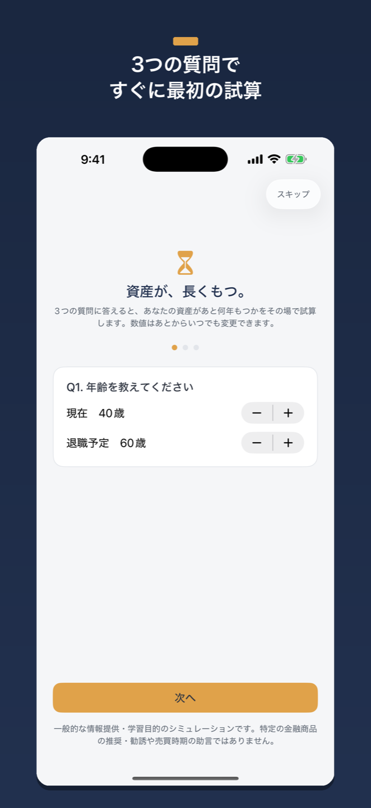

積立（資産形成）から退職後の取り崩しまで。「自分のお金は最後までもつのか」という一つの問いに、Monte Carlo（モンテカルロ）試算で答える、完全オフラインの資産寿命シミュレーターです。
Features
| 対応OS | iOS 17.0 以降 |
|---|---|
| 価格 | 無料（アプリ内課金あり） |
| バージョン | 1.0 |
| サイズ | 約 1 MB |
| カテゴリ | ファイナンス |
| 対象年齢 | 4+ |
| 対象ユーザー | 老後資金・FIREを検討する人 |
| データの扱い | 完全オフライン・口座連携なし・データ収集ゼロ |
| 開発者 | freetokyo |
| 最終更新 | 2026-06-11 |





積立・取り崩し・アロケーション・為替まで、資産の全ライフサイクルを一つのアプリで試算・可視化します。
成功率・枯渇確率・資産寿命・終末資産の分布を、Monte Carlo試算のファンチャートで可視化。結果のばらつきまで一目で把握できます。
試算・可視化定額・定率・動的ガードレール・床天井の取り崩し戦略に加え、公的年金（受給開始年齢60〜75歳）とその他の定期収入を入力できます。収入は取り崩し必要額から差し引かれます。
フルライフサイクル目標成功率（80〜95%）を満たす取り崩し額を逆算。資産総額を記録すると、計画の分布帯に実績線が重なり、計画と現実の乖離を定期的に確認できます。
v1.1 新機能資産配分のグライドパス、感応度分析、シーケンス・オブ・リターン・リスクの可視化に対応します。
分析「2000年に退職していたら」「2008年に退職していたら」といった過去の局面に基づくバックテストを試せます。
過去データシナリオを無制限に保存し、前提の違いを横並びで比較。結果は1枚の画像で共有（無料）でき、プレミアムではPDFレポートも出力できます。
比較・出力計算はすべて端末内で完結。外部通信ゼロ・データ収集ゼロ・口座連携なし・アカウント登録なし。Apple純正フレームワークのみで構築しています。
プライバシーMochiruは、円建ての投資家がUSD建ての米国株（ナスダック100連動）を保有する前提で、株安と円高が同時に起きるクラッシュ相関をモデルに保持します。「想定リターン±リスク」を正規分布で扱う一般的なツールが過小評価しがちなリスクを、ヒストリカル・ブロック・ブートストラップによって、より現実に近い形で示します。
Pricing
まず無料プレビューでお試しいただけます。フル機能は買い切りのプレミアムで解放。サブスクリプションはありません。